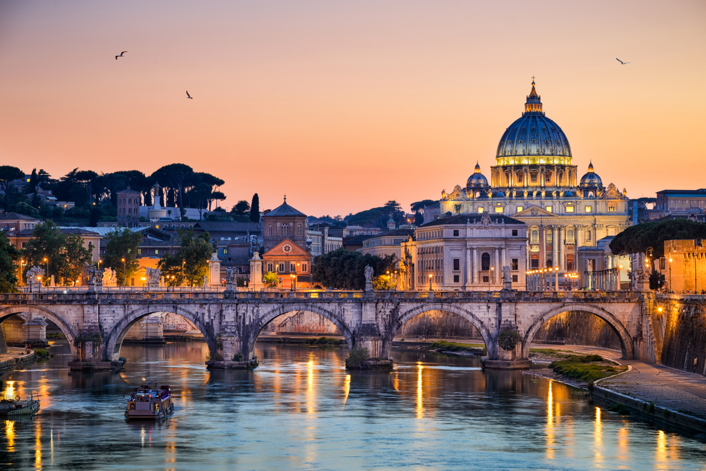

Top 5 World Destinations
Vatican City , officially the Vatican City State , is the Holy See's independent city state, an enclave within Rome, Italy.[12] The Vatican City State, also known as The Vatican, became independent from Italy with the Lateran Treaty (1929), and it is a distinct territory under "full ownership, exclusive dominion, and sovereign authority and jurisdiction" of the Holy See, itself a sovereign entity of international law, which maintains the city state's temporal, diplomatic, and spiritual independence
